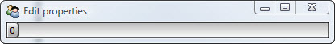
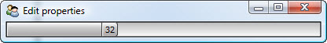
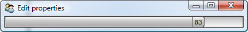
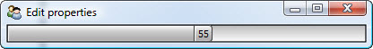

From our own experience, we all have a pretty good idea of what animation is. We know it includes things like:
And while animation in Facets can be used to create similar effects (albeit usually on a more modest scale), the technical definition of animation in Facets is: program controlled modification of one or more object attributes over time.
Although that doesn’t sound too interesting or sexy, proper use can achieve results ranging anywhere from cute, to fascinating, all the way up to hypnotic and mesmerizing.
For now, let’s start simple and just aim for mildly amusing:
class Bouncer ( HasPrivateFacets ):
bounce = Range( 0, 100 )
view = View( UItem( 'bounce' ), width = 400 )
Bouncer().edit_facets()
We start with a simple Bouncer class which has a single facet bounce, which is an integer in the range from 0 to 100, and a trivial view containing the bounce facet rendered using its default editor. Since bounce is a Range, its default editor is a RangeEditor.
Running this program results in:
No animation is happening yet though (although we can drag the slider back and forth with our mouse if we want). However, all that changes when we add the following method to our Bouncer class:
def facets_init ( self ):
self.animate_facet( 'bounce', end = 100, repeat = 0 )
Recall from our previous discussion that the special facets_init method is called once immediately after our default class constructor has finished initializing the Bouncer object. In this case we take advantage of that to start the animation when the object is created.
Now when we run the program the slider bounces side to side like a progress bar gone mad (try squinting while looking at these screen shots and use your imagination):
  Loosely translated, the newly added code can be read as: animate our object’s bounce facet to count from 0 (its default initial value) to 100 over a period of one second (the default animation time), and then count backward from 100 to 0 over the next second. Repeat this over and over again until the user stops the program.
Note that this description exactly matches our Facets definition of animation given earlier. If you try and drag the slider with your mouse now, you will find that you can’t, because the bounce facet is now program controlled by the FacetAnimation object.
If you’ve read all of the preceding sections carefully, you probably already have a pretty good idea of why the slider appears to be animated:
And that’s all there is to it...easy peasy, thanks to the Facets notification and UI architecture.
Of course, there’s a lot more to learn about the animation system, including all of the different animation types, paths and tweeners available, some of which will be covered in more detail in later chapters.
In the meantime, if you want to see more animation examples closer to the fascinating and mesmerizing end of the spectrum, try firing up The Facets UI Demo and exploring some of the examples in the Graphics and Animation folder.